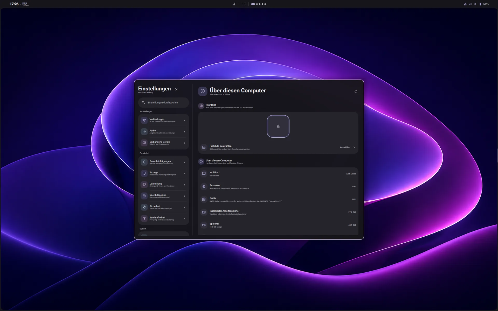

A desktop shell instead of a collection of unrelated parts.
Voidline brings the everyday surfaces around Hyprland into one project, one interaction language, and one place to keep improving.
Open source / Hyprland
Hyprland manages the windows. Voidline is building the shell around them: one connected place for the controls, panels, settings, and system moments that make a desktop feel complete.
Public development preview. Available to test on Arch Linux with Hyprland, but not yet intended as a production-stable shell.

Voidline is not a replacement for Hyprland. It is the connected desktop experience around it: bar, panels, settings, notifications, session controls, lock screen, and supporting tools.
Voidline brings the everyday surfaces around Hyprland into one project, one interaction language, and one place to keep improving.
Common controls stay close, readable, and visually connected instead of being hidden across separate utilities.
The source and development release are public so people can test the direction, inspect the implementation, and report issues.
The current development build connects its most visible surfaces through three layers: quick access, the wider system experience, and the native tools beneath both.
The parts of the desktop you reach for throughout the day.
Core screens designed to feel like they belong together.
Supporting tools for control, performance, and future growth.
Navigation, controls, and system information follow the same visual rules as the rest of Voidline instead of feeling like a separate utility.

Related controls are grouped into familiar categories.
Cards, controls, and spacing follow the same rules across the shell.
Important device information stays easy to scan.
The latest video shows the current working direction: connected desktop surfaces, everyday controls, and the experience taking shape around Hyprland.
Open on YouTube ↗Voidline currently targets Arch Linux with Hyprland. Read the repository requirements and back up your current configuration before installing.
git clone --branch v0.3.0dev --depth 1 https://github.com/ShadowOkami4/voidline.gitcd voidline./install.sh --install-depsOpen source / In development
Explore the source, test the development release, report what you find, or join the Discord community to follow the work.